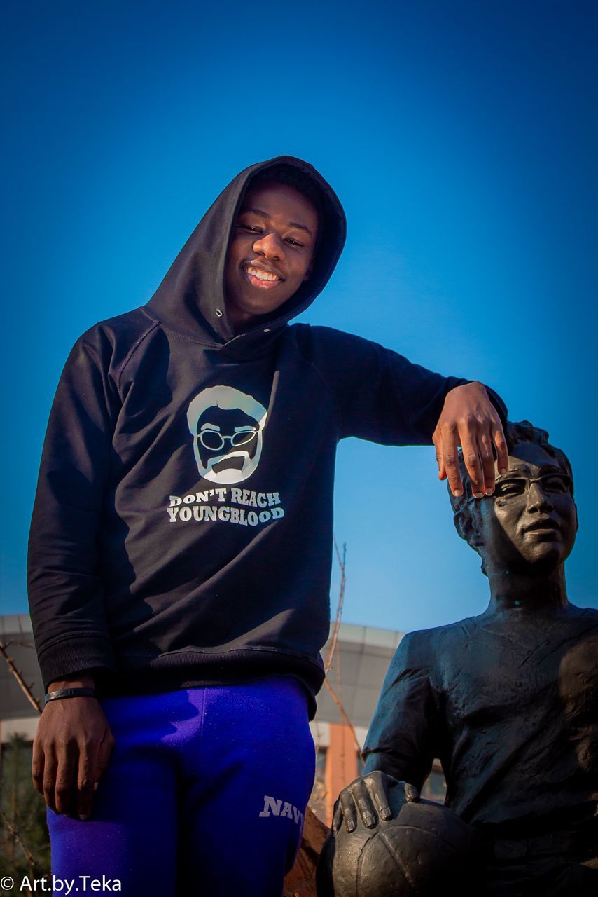

MY SKILLS
HTML
CSS

GITHUB

Aspiring Full-Stack Developer

I'm a passionate and self-driven web developer with a growing skill set in HTML,CSS and mordern web design techniques. i enjoy bringing ideas ti life through clean, responsive, and user- friendly interfaces. My journey into tech started from curiosity, but it has quickly grown into a serious pursuit as i continue to bulid projects, Explore new tools, and improve my problem-solving abilites.
Beyong coding, I have a background in sales, which has helped me develop strong communication skills and a deep understanding of user needs. I'm currently focused on expanding my knowledge in frontend development while also exploring other opportunities in digital business. My goal is to creat impactful digital solutions, grow as a developer, and contributr meaningfully to the real-world projects.
HTML
CSS
GITHUB